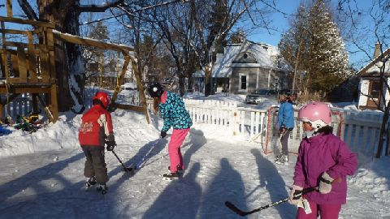

Fact or Fiction:
Canadian Canundrums

Français
Start the quiz
Crazy Chain
A nuclear chain reaction cannot be controlled.

That's a fiction! All nuclear reactors employ systems to control the chain reaction that occurs when neutrons released by the splitting of one uranium atom cause others to divide or fission. All of these systems work by blocking the path of neutrons.
Saskatchew #1?
The world’s richest uranium deposits are located in northern Saskatchewan.

That's a fact! Fourteen percent of the world’s known uranium resources are located in northern Saskatchewan where ore grades are up 100 times the world average.
Friendly Neighbourhood Record-Holder
The largest nuclear generating plant in North America is located in Ontario.

That's a fact! The Bruce Power nuclear generating station located in Ontario on the shores of Lake Huron is North America’s largest nuclear generating plant with capacity to produce 4,660 megawatts of electricity.
Not in MY Backyard
There's uranium in your back yard.
That's a fact! The top metre of soil in the typical Canadian back yard contains about 300 grams of natural uranium from when the Earth formed!
Dig Deeper
You can only find uranium in rocks.

That's a fiction! Trace amounts of uranium are found everywhere in the world including in the food we eat and in our own bodies.
Ripe Pair
Radiation can be used for slowing the ripening of fruits and vegetables.

That's a fact! Radiation is one of the most useful tools in modern science and agriculture, with a variety of uses from medical treatment to sterilizing equipment and tools to determining the age of objects.
Responsible or Reckless?
Uranium exploration causes dangerous levels of radiation to be released.

That's Fiction! Typical uranium exploration methods, such as drilling small core samples, pose a negligible to zero risk of increasing exposure to radiation, including radon.
Isotope Pop?
Radioisotopes are used to control how much soda goes into soft drink bottle.

That's a fact! Radioisotopes are used in a wide range of measuring and metering equipment, including systems used in the soft drink industry.
Extreme Bathing
People are exposed to radiation all of the time.

That's a fact! Radiation is all around us and we are exposed to some form of it every day of our lives. More than 85% of all radiation to which people are exposed occurs naturally.
Mining Madness
The Nuclear Safety and Control Act designates uranium mines and mills as nuclear facilities.
That's a fact! A CNSC license is required to prepare a site, construct, operate, decommission or abandon a uranium mine or mill.